Renderer DirectX 12
Każda klatka jest renderowana w DirectX 12 we własnym oknie gry. Wygładzanie krawędzi, cienie otoczenia, HDR, bloom i wyostrzanie są opcjonalne. Starsze komputery automatycznie przechodzą na OpenGL.

Klasyczna strzelanka taktyczna, odbudowana jako natywna 64-bitowa gra z rendererem DirectX 12. Oryginalne mapy, żołnierze i HUD oraz launcher, który hostuje twoje serwery i dba o aktualność gry.
TrueCombat: Elite było realistyczną konwersją totalną Enemy Territory osadzoną we współczesnym konflikcie: jedno życie na rundę, prawdziwa broń i mapy zbudowane pod powolną, ostrożną grę. Wciąż działa jako 32-bitowy mod na silniku z 2003 roku.
TrueCombat: Platinum odbudowuje je jako natywną 64-bitową grę dla Windows. Renderer to nowy kod DirectX 12, HUD jest dopasowany do oryginału piksel po pikselu, a prędkości ruchu pochodzą wprost z oryginalnych wartości. Jeśli DirectX 12 sprawia kłopoty, Safe start uruchamia grę na OpenGL.
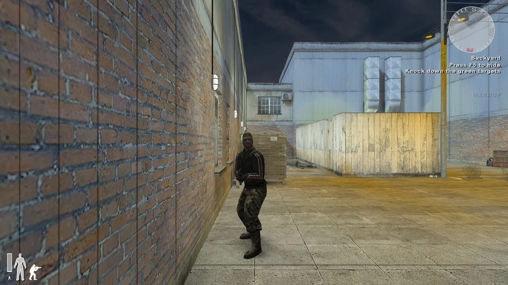
Każda klatka jest renderowana w DirectX 12 we własnym oknie gry. Wygładzanie krawędzi, cienie otoczenia, HDR, bloom i wyostrzanie są opcjonalne. Starsze komputery automatycznie przechodzą na OpenGL.
Układ, czcionki, kompas, pasek kondycji, zegar rundy i linie celów z TC:E. Sylwetka postaci zmienia kolor na żółty, pomarańczowy i czerwony, gdy otrzymujesz obrażenia.
Sprintuj z Shift, aż skończy się kondycja, wychylaj się zza rogów klawiszami Q i E, kucaj pod C i kładź się pod X. Drabiny i woda działają tak jak w TC:E, a każda prędkość zgadza się z oryginałem.
Każdy strzał trafia w strefę z własnymi obrażeniami. Gracz kucający lub leżący jest mniejszym celem.
Wszystkie 27 sztuk broni palnej, nóż i każdy granat, z oryginalnymi obrażeniami, odrzutem i rozrzutem. Pociski przebijają drzwi, ściany i skrzynie, tracąc moc na każdej powierzchni.
Launcher sprawdza na GitHubie nowe wersje, pokazuje prędkość pobierania i pozostały czas, a instaluje wyłącznie aktualizacje podpisane przez Team Terminus. Twoje ustawienia i serwery zostają zachowane.
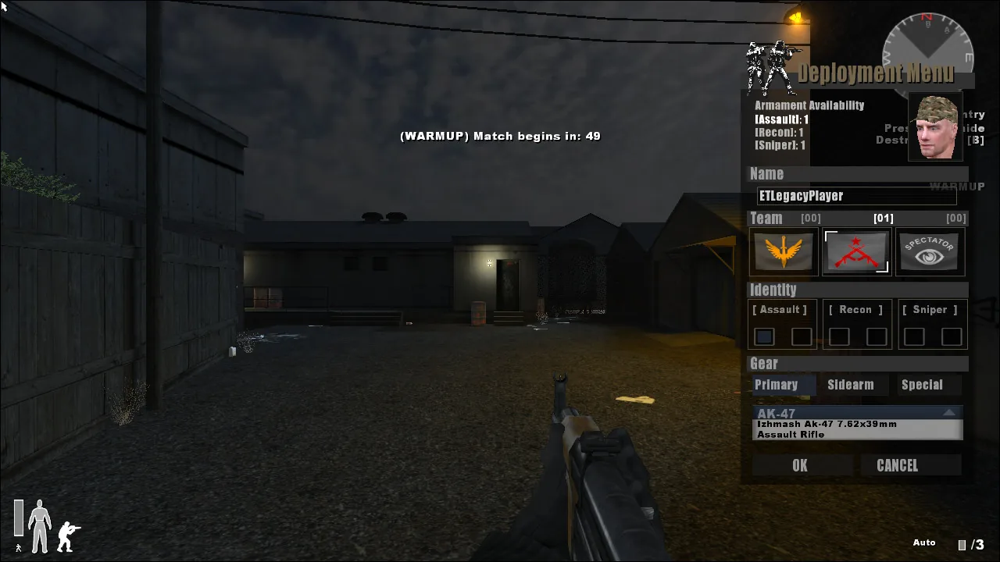
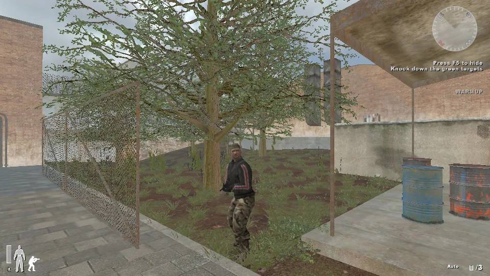
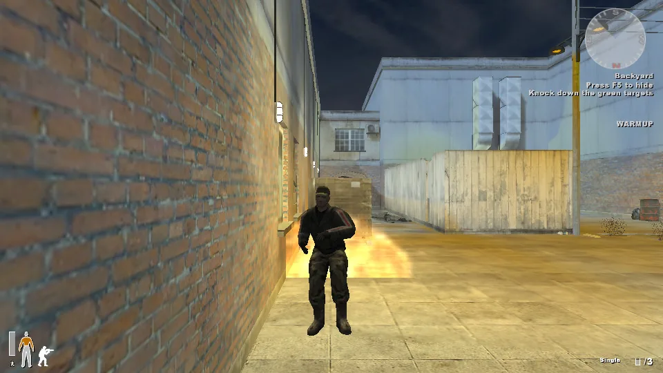
TrueCombat: Platinum powstaje na oczach graczy. Każdy większy etap prac ma swój wpis: co się zmieniło, dlaczego i co będzie dalej. Wpisy są po angielsku.

A live minimap, hits you can feel, friendly fire, and a game that looks like Platinum from the taskbar to the first frame. Here is what changed in 0.37.2, and why.
A HUD you can size to your screen, a magazine and health readout in the spirit of the original, weapons back at their true fire rates, smoother map loads and optional HD textures. Here is what changed in 0.37.1, and why.

We measured the whole game, from frame times and loading screens to the servers and the download, before deciding what to fix. Here is what we found, what is already fixed and what comes next.

Jedno życie na rundę, prawdziwa broń i mapy zbudowane pod cierpliwą, taktyczną grę. Film zaczyna się od 0:32.
Film jest odtwarzany z YouTube w trybie rozszerzonej prywatności. Nic nie ładuje się z YouTube, dopóki nie naciśniesz odtwarzania.
Każdy obraz to bezpośredni zrzut z renderera DirectX 12. Bez retuszu.


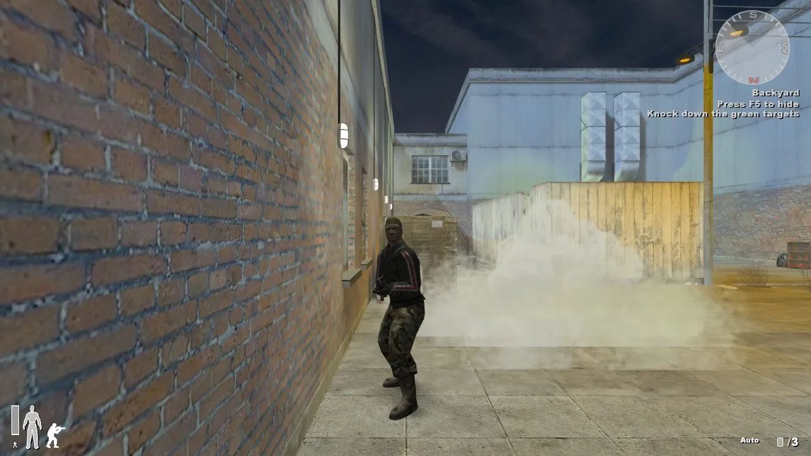
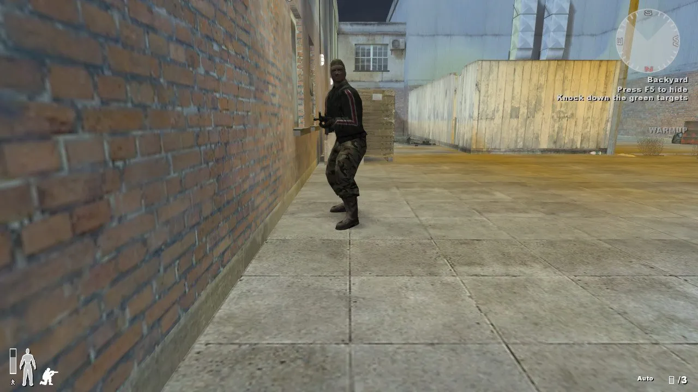
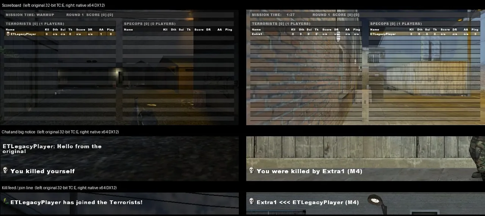
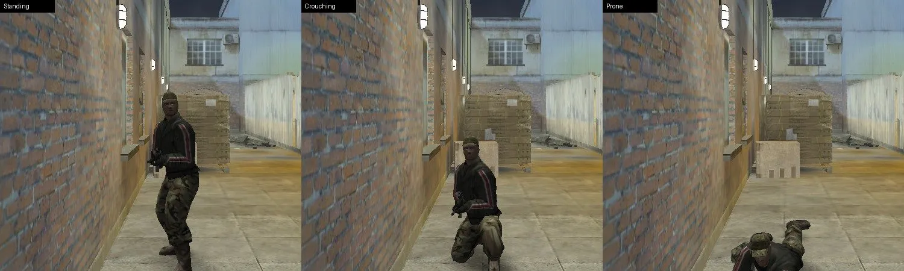
Przeciągnij po obrazie, aby porównać oryginalny wygląd z nowymi ustawieniami. To samo miejsce, ta sama klatka, podwórze Railhouse w 1080p.
Tekstury HD świata, modeli, HUD-u i menu są instalowane domyślnie. Na kartach RTX dostępne są też tryby jakości DLSS: wpisz w konsoli r_dx12Dlss 2 do 5, a potem vid_restart.
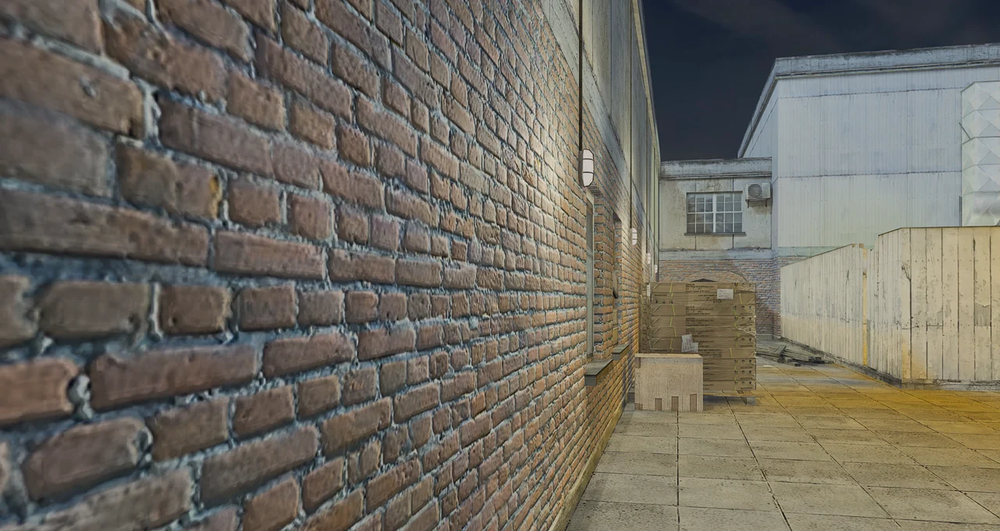
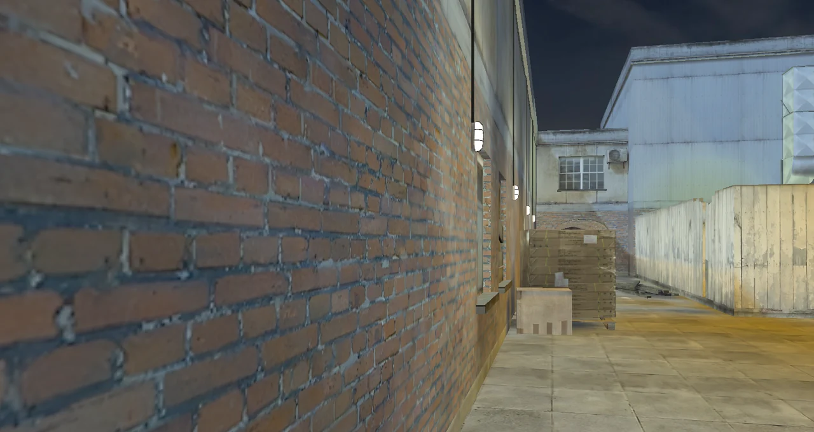
Low Ultra
Dwa oficjalne serwery w UE działają całą dobę: #1 Ranked, gdzie każdy mecz liczy się do rankingów, oraz #2 Unranked, na którym ruch podtrzymują boty. Każdy serwer hostowany z włączoną opcją List publicly pojawia się tutaj i w zakładce Servers w launcherze.
Zawsze możesz hostować z launchera i podać innym swój adres. Pozostali dołączają domyślnie przez port UDP 27971. Wszyscy w meczu muszą mieć tę samą wersję.
| Serwer | Mapa | Gracze | Tryb |
|---|
Wczytywanie listy serwerów na żywo. Zakładka Servers w launcherze pokazuje tę samą listę.
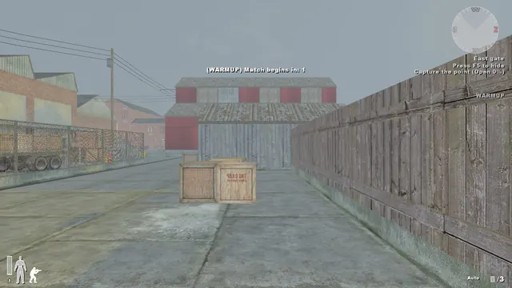
Ready-up, runda na noże o wybór stron, przerwa w połowie i taktyczne timeouty, które zamrażają cały mecz. Jedna komenda na dowolnym serwerze.
Tryb meczowy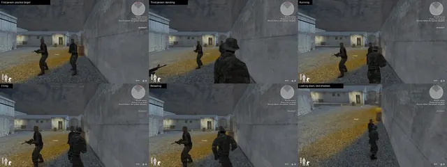
Realistyczna strzelanka taktyczna zbudowana na Enemy Territory, grywalna dziś na Windows 10 i 11.
TC:E dziścg_pings 0 hides other players' marks.bot_chat).bot_adaptive 0).cg_netGraph 3 shows ping, packet loss in both directions, updates per second, snapshot gaps, prediction corrections and packet duplication.cg_bugReportUpload 0 keeps reports on your PC only.bugreport <text> in the console files a report straight away.cg_toggleWalk / cg_toggleSprint).Każda aktualizacja od pierwszej publicznej wersji jest na stronie aktualności (po angielsku), razem z kanałem RSS. Pliki do pobrania znajdziesz w GitHub Releases.
Przeczytaj poradnik dla początkujących: sterowanie, tryby gry i kilka wskazówek, dzięki którym pożyjesz dłużej. Strona broni zawiera każdą broń z TC:E.
Tak. Pobierz ją z GitHub Releases i graj. Każda wersja zawiera kod źródłowy oraz licencje oryginalnych plików gry.
Pobierz pakiet prasowy z logotypami, zrzutami ekranu i zestawieniem faktów.
Tak. Wybierz oficjalny serwer w UE w zakładce Servers w launcherze, rankingowy lub nie, dołącz do dowolnego innego serwera publicznego albo w kilka kliknięć hostuj własny mecz.
Prawie. Każda broń, wszystkie siedem trybów gry, oryginalna prędkość ruchu, wychylanie, drabiny i pływanie są już w grze. Następne w kolejce są wspinanie się na krawędzie, błysk wystrzału w widoku pierwszoosobowym i luneta snajperska, a plan rozwoju pokazuje, co dalej.
Dołącz do Discorda TrueCombat: Platinum. To tam umawia się mecze, udostępnia serwery i jako pierwsze ogłasza nowe wersje.
Naciśnij Safe start w launcherze. Gra uruchomi się na OpenGL w oknie 1280 × 720, a jeśli DirectX 12 zawiedzie, sama też przełączy się na OpenGL.